В отдаленных горах Колорадо ужасы ждут внутри Mount Massive Asylum. Давно заброшенная лечебница для душевнобольных, недавно вновь открытый филиалом «исследований и благотворительности» транснациональной корпорации Murkoff, работает в условиях строгой секретности... до сих пор. Действуя по наводке одного из сотрудников Murkoff, независимый журналист Майлз Апшер врывается в объект, и то, что он обнаруживает, проходит ужасающую грань между наукой и религией и чем-то еще. Оказавшись внутри, его единственная надежда на спасение заключается в ужасной правде в сердце Mount Massive.
Outlast - Official Trailer from Red Barrels (Full version)
Изображения
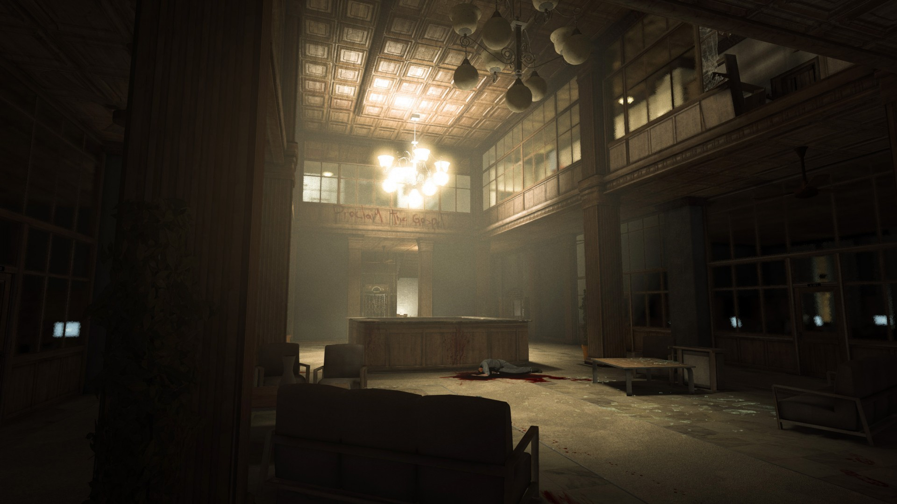
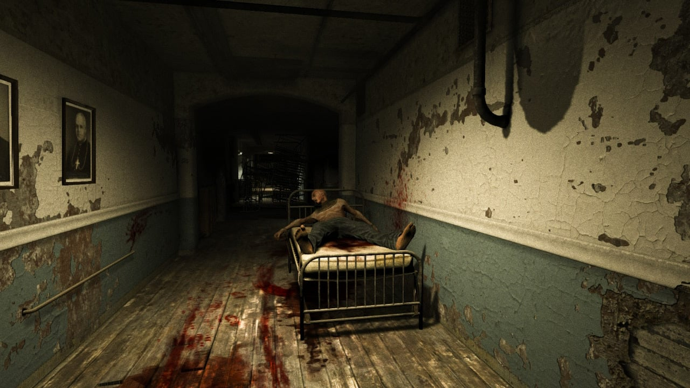
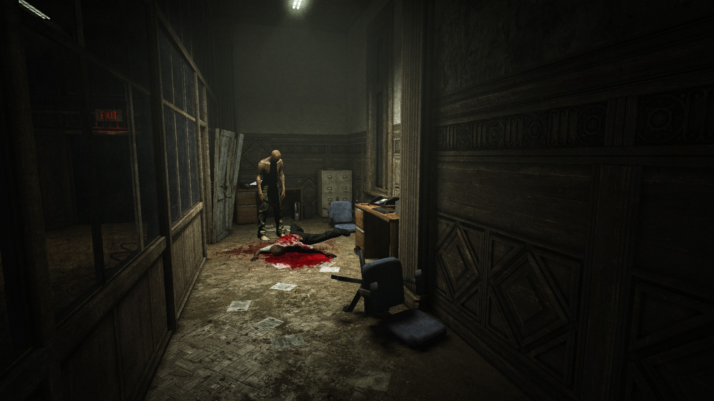
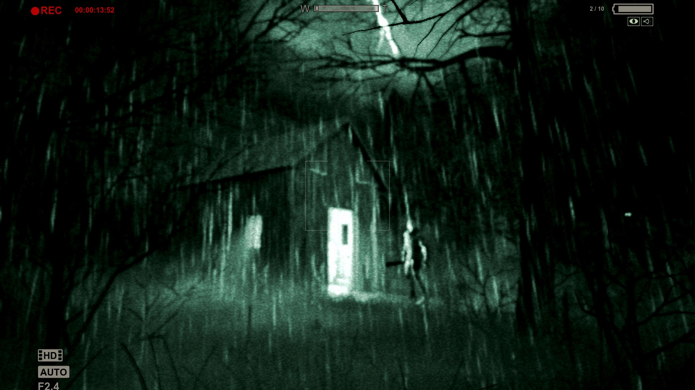
Саундтреки
Welcome To The Asylum
Pyromaniac
The Chapel
Finale
End Credits
Персонажи
Майлз Апшер
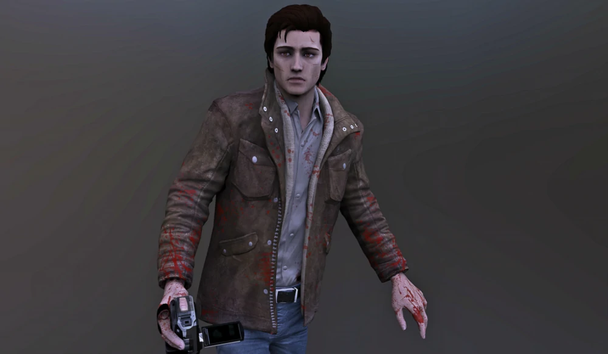
Майлз, главный герой игры первоначально работал как обычный журналист для неизвестной компании, до тех пор, пока его не уволили, в результате публикации недопустимых материалов о ситуации в Афганистане. С тех пор Майлз работал на себя в качестве журналиста-расследователя. После получения электронного письма, в котором рассказывается о незаконной деятельности в психиатрической лечебнице Mount-Massive, Майлз решает провести там расследование . . .
Крис Уокер
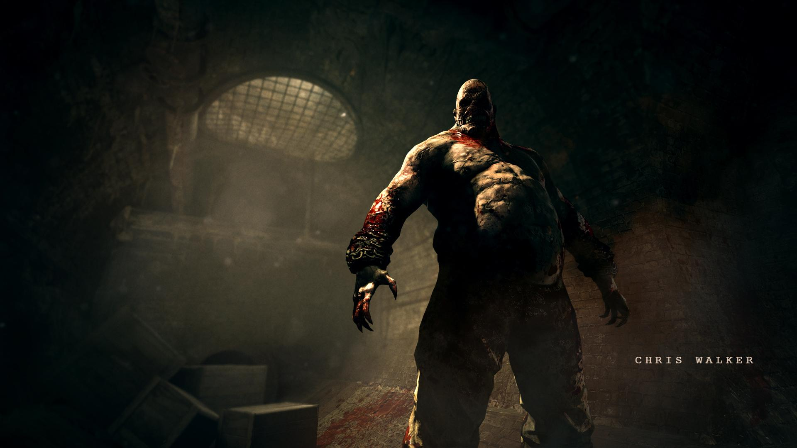
Уокер был солдатом армии США, который участвовал в боевых действиях в Афганистане, где он получил психологические травмы. После возвращения в Америку его положили в псих. клинику Спиндлтоп. Данное учреждение в какое-то время было выкуплено корпорацией Меркоф. Однако он благополучно заканчивает лечение и становится сотрудником Меркоф, устроившись охранником в клинике Спиндлтоп. Уокер хорошо выполнял свои обязанности, но с его психикой всё равно было не в порядке, и в какой-то момент он жестоко разрывает троих пациентов клиники . . .
Ричард Трагер
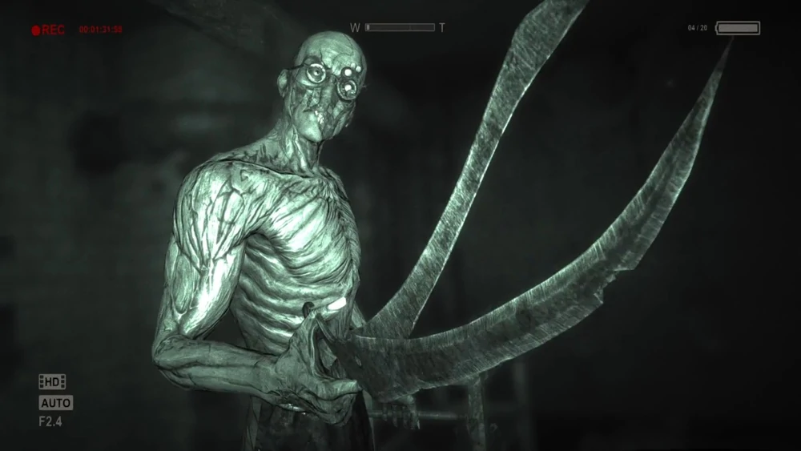
Трагер предстаёт как оптимистичный и дружелюбный человек, который шутит, называя Майлза "приятелем", и не теряет самообладания. Он способен на разумную и последовательную речь. Тем не менее, это маскирует его истинную личность: садиста и психопата, который пытает каждого, кто попадётся под руку. Он сочетает обе эти навязчивые идеи с его жестоким занятием. Несмотря на наклонности, сохраняет свою вежливую и утончённую натуру. При себе имеет садовые ножницы . . .
DLC превзошедшее оригинал
Outlast: Whistleblower
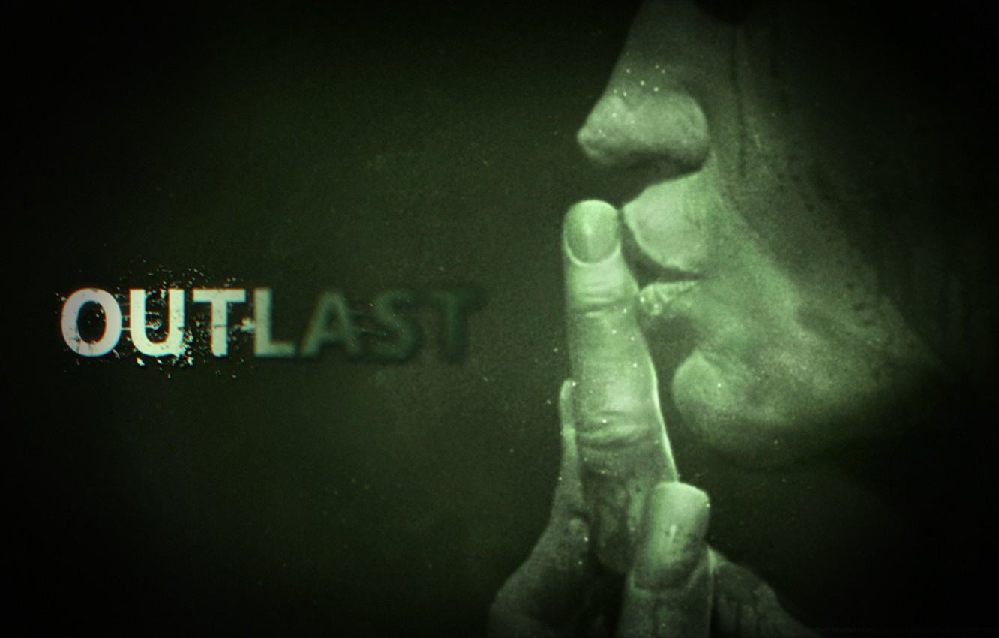
Действие разворачивается накануне до начала событий оригинальной игры и в дальнейшем частично с ними пересекается. Главный герой — Вэйлон Парк — работает в подземных лабораториях Murkoff программистом. Понаблюдав местные "методы лечения" решает написать письмо целью разоблачить корпорацию. Но компрометирующее письмо обнаружило начальство, после чего наш герой переквалифицируется из работников в пациенты. Очухиваемся мы уже привязанными к креслу, прямо во время проведения морфогенетического теста. Внезапно свет гаснет и всё летит к чертям, клиника мгновенно встаёт с ног на голову, а мы в это время выбираемся из "процедурной" и начинаем искать путь на свободу.
Outlast: Whistleblower - Trailer
Изображения
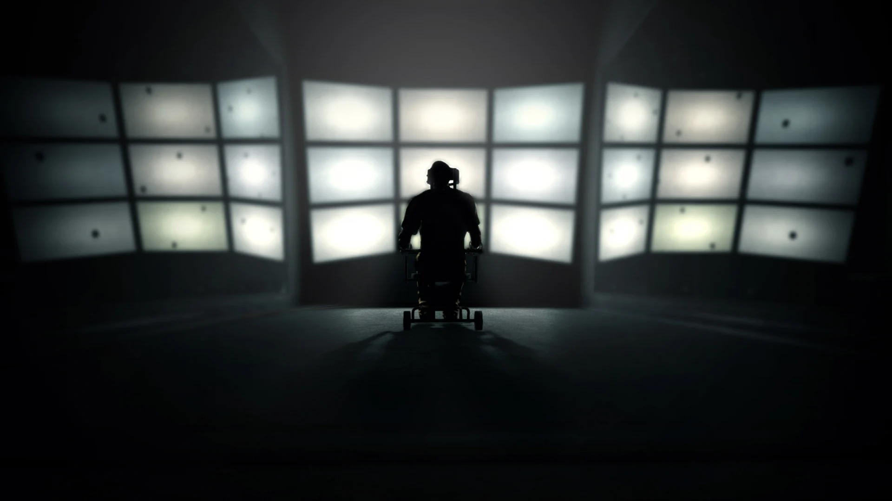
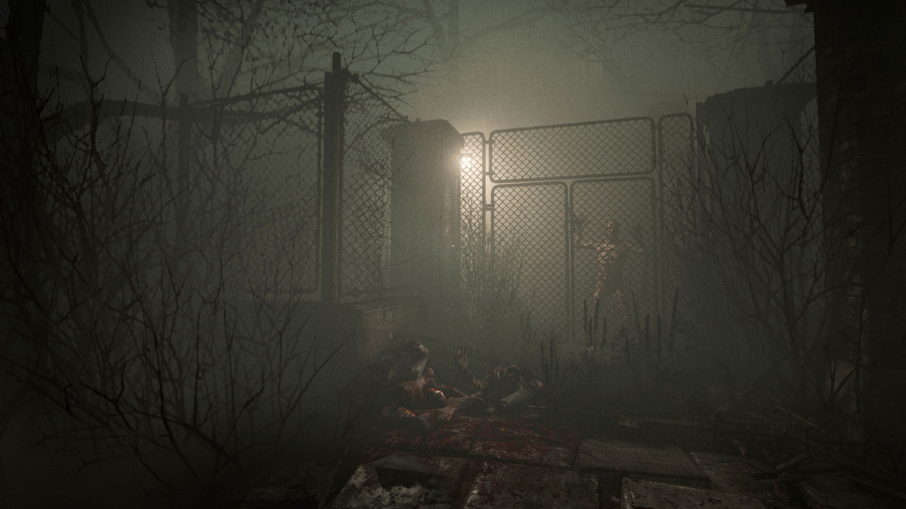
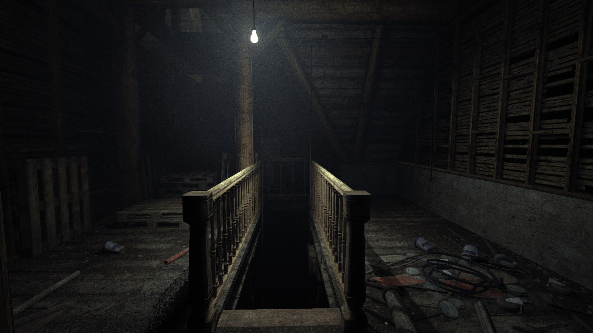
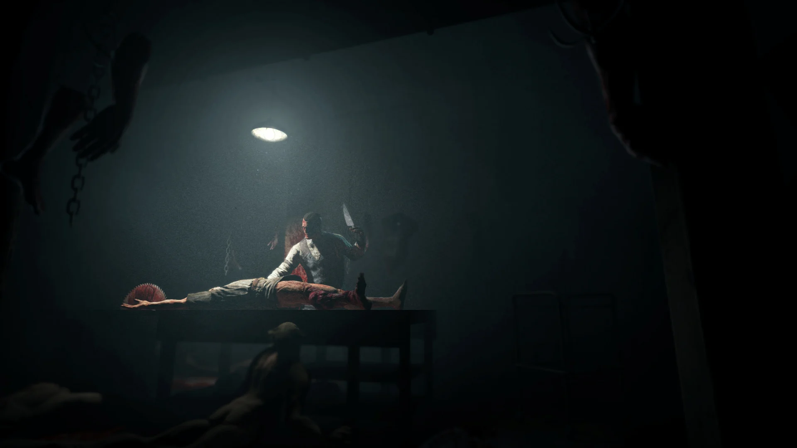
Саундтреки
Intro
Sphere
Groom Torture
Ending
Герои
Вэйлон Парк
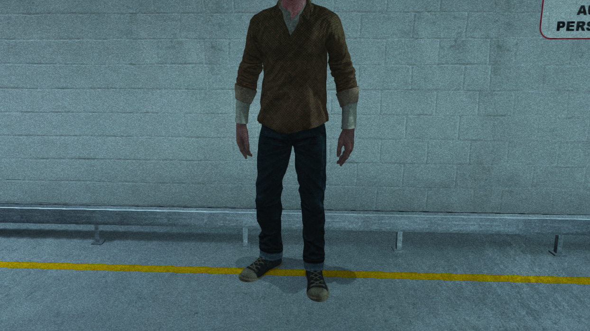
Вэйлон Парк – программист компании "Murkoff", непродолжительное время работающий в ней и обеспечивающий техническую сторону проводимых психиатрических исследований. Однажды он становится свидетелем ужасных экспериментов над людьми и это толкает его на необдуманный шаг – он связывается с журналистом Майлзом Апшером и рассказывает ему о том, что в "Mount Massive" происходит нечто ужасное. Естественно, Парка быстро вычисляют и его отправляют "добровольцем" на исследования с морфогенетическим кондиционированием . . .
Фрэнк Манера
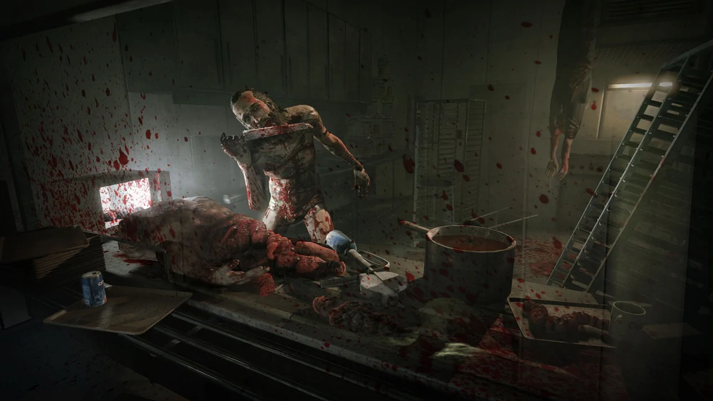
Фрэнк вооружен ручной дисковой пилой, и будет постоянно включать её, давая понять герою, что он рядом. Также он использует её для запугивания. Главная составляющая его колорита - слабость к каннибализму, этот человек с удовольствием разделывает на куски попавшихся под руку пациентов и затем поедает их. Бегает за Вэйлоном с криками "Покорми меня" и с характерным жужжанием пилы. Согласно документам, которые игрок может найти по мере прохождения, Фрэнк, еще до кровавой бойни в "Mount Massive", проявлял склонность к насилию и каннибализму . . .
Эдди Глускин
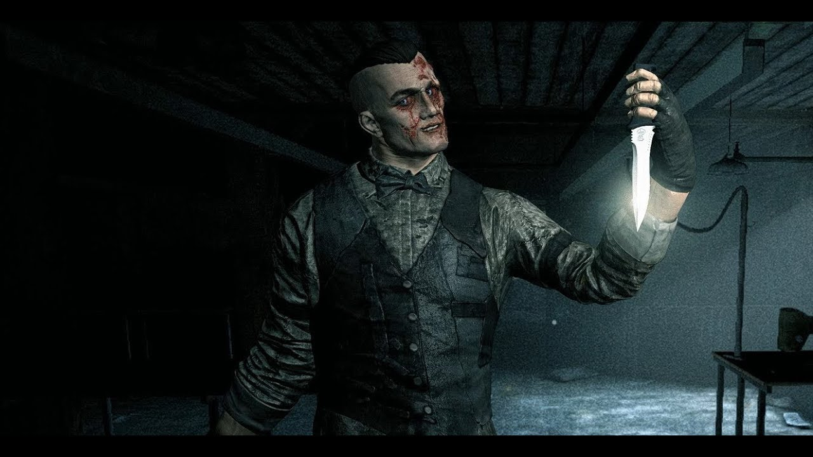
До того, как Глускин попал в клинику Mount Massive, он был социопатом, жестоко убивающим женщин. Во время хаоса в лечебнице . Он жаждет найти себе "невесту". Вылавливает всех, кого только можно, и мучает их в своей "мастерской", а потом вешает под потолком в спортзале. Он отрезает своим жертвам конечности, в том числе и гениталии, чтобы сделать идеальную "невесту". Весьма высокий, одет в смокинг, глаза заплаканные. Он пытается показать себя доброй личностью, используя спокойный тон и комплименты, но будучи отвергнутым, может перейти и на оскорбления . . .